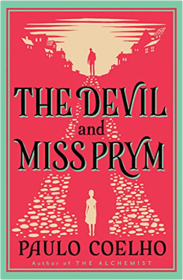
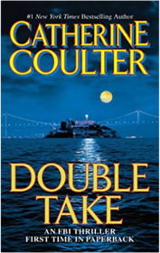
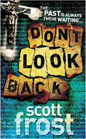
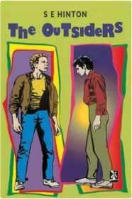
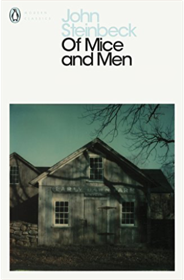
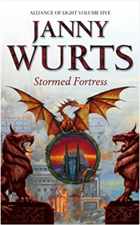

Mammoth Book of Short Spy Novels  The Signet Classic Book of American Short Stories  Kane and Abel  Paths Of Glory  Shall We Tell The President? Archer, JeffreyThe Conference of the Birds Attar, Farid ud-DinEmma  Jonathan Livingston Seagull : A Story Bach, RichardWorld Records, Freaky Fact or Fiction Dianne BatesFor Love of Lily  Tiger Eyes  The Magic Snow Bird: and Other Stories  Playing the Game  THE DA VINCI CODE  Thank You for Smoking  Red Classics Master And Margarita Bulgakov, MikhailMiniaturist  A Most Wanted Man  Don't Judge A Girl By Her Cover  The Alchemist : A Fable About Following Your Dream  By the River Piedra, I Sat Down and Wept  Devil and Miss Prym Coelho, PauloThe Devil and Miss Prym  Coelho, PauloEleven Minutes Coelho, PauloEleven Minutes  The Winner Stands Alone Paulo CoelhoStories from Shakespeare Anne CollinsDrop Dead Beautiful Collins, JackieJudith krantz lovers  Double Take: An FBI Thriller  Coulter, CatherineMidnight Josephine CoxDivorced, Desperate and Delicious  The Brief Wondrous Life of Oscar Wao Junot D¡azA Partisan's Daughter  The Flood  The Witch's Tongue  The Testament  Requiem for an Assassin Eisler, BarryRides a Dread Legion Raymond E. FeistThen We Came to the End Ferris, JoshuaA Perfect Proposal Fforde, KatieMadame Bovary Flaubert, GustaveExtremely Loud and Incredibly Close  Hornet Flight  A Place Called Freedom  Break in  Don't Look Back: The Autobiography  Scott FrostThe Hippopotamus Fry, StephenUh-oh Fulghum, RobertLove in the Time of Cholera  Lord of the Flies, Educational Edition  The Curious Incident of the Dog in the Night-Time  The Reluctant Fundamentalist  Dead Until Dark  Jane Austen's Guide to Dating  The Outsiders  Hinton, S.E.River of Gold Holthouse, HectorA Thousand Splendid Suns  A Prayer for Owen Meany  After All These Years  London Dust  Portrait of a Lady  Lingering Shadows Jordan, PennyTime Fuse  The Brightest Star in the Sky  The Other Side of the Story  The King's Magicians  Full Dark, No Stars  It King, StephenThe Gatecrasher Kinsella, SophieThe Girl Who Played with Fire Larsson, StiegOBWL3: The Call of the Wild: Level 3: 1,000 Word Vocabulary  Blue Smoke and Murder Lowell, ElizabethBLACK BLADE  Two's Company Mansell, JillLove in the Time of Cholera  Life of Pi  Superchick  In the Country of Men  Fire After Dark Matthews, SadieThe Devil's Disciple  The House By the Sea  Mad About You: Emma and James, novel 4  Beloved  After the Mourning  Ringworld: A Novel  Nineteen Eighty Four  Stories We Could Tell Parsons, TonyThe Spire Patterson, Richard NorthWitch of Portobello, The COELHO PAULOPRIOR  The Fountainhead  The Celestine Prophecy: An Adventure  The Reader  Keep Your Mouth Shut and Wear Beige  Androcles and the Lion: An Old Fable Renovated Bernard ShawChild 44  The Booster: A Novel  At First Sight  Grapes of Wrath Steinbeck, JohnOf Mice and Men  Steinbeck, JohnThe Adventures of Tom Sawyer  Around the world in Eighty days: A Jules Verne's Classic Novel With 55 Original Illustrations  max's christmas  Stormed Fortress  Wurts, Janny |


Bahrain Library
Collection Total:
554 Items
554 Items
Last Updated:
Nov 19, 2022
Nov 19, 2022
 Made with Delicious Library
Made with Delicious Library
Manama, Capital Governorate zipflap congrotus delicious library Alwani, Shazia